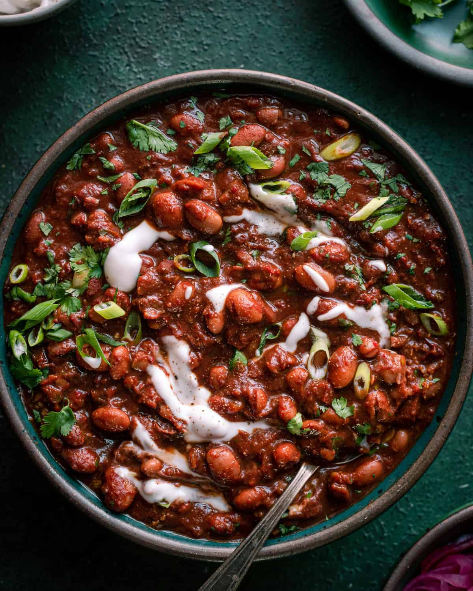

Vegan Chili

Adapted from Nisha's "The Best Vegan Chili" recipe on Rainbow Plant Life
Description
Spicy, hearty, and packed with flavor.
Ingredients
Chili
- 3 tbp olive oil
- 1 large yellow onion, diced
- 6 garlic cloves, chopped fine
- 2 jalapenos, diced
- 2 tbsp tomato paste
- 4 tbsp chili powder
- 1 tsp cayenne pepper
- 1 tbsp ground cumin
- 1 tsp smoked paprika
- 2 tbsp oregano
- 2 red bell peppers, diced
- 5 medium-sized carrots, diced
- 2 cans of pinto beans, drained
- 1 can of navy beans, drained
- 2 bay leaves
- 1 tbsp soy sauce
- 2 cans of diced, fire-roasted tomatoes
- 1 1/2 tsp kosher salt + more as needed
- Freshly cracked black pepper
- 1 tbsp maple syrup
- 1 tsp apple cider vinegar
Toppings of choice
- Diced avocado
- Sliced green onions or chopped cilantro
- Shredded vegan cheese
Steps
- Heat saucepan over medium-high heat. Add the olive oil, and once shimmering, add onions and season with a few pinches of salt. Stir frequently and cook onions until golden brown, stirring occasionally, about 10 minutes. If they start to burn, stir more frequently and/or add a splash of water.
- Add garlic and jalapenos, and cook for 2-3 minutes, stirring frequently.
- Add carrot and cook for 5 minutes. Then add peppers and cook for 3 minutes.
- Stir in chili powder, cumin, paprika, and oregano and stir vigorously for 30 minutes.
- Pour in pinto beans, navy, beans, bay leaves, soy sauce, diced tomatoes, salt, black pepper to taste, and 1 tbsp maple syrup. Stir well.
- Bring chili to a boil over high heat, then reduce to a gentle simmer. Cook, stirring every 10 minutes, until thick and velvety and flavors have melded together, about 1 hour.
- Stir in in vinegar. Taste and add up to 1 more tbsp maple syrup for sweetness to balance any bitterness. Season with salt and pepper, as needed.
- Serve with toppings of choice.